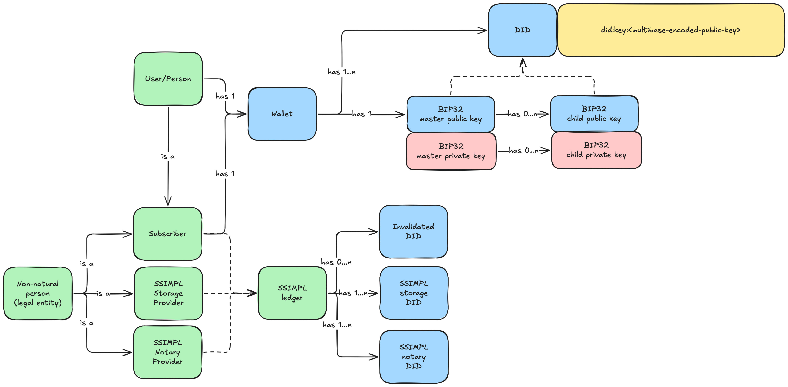

1. SSIMPL - Specification
The SSIMPL protocol described in the following specification addresses a few problems that have existed since the early days of the internet — certainly since Web 2.0:
How do you keep the owner of the online identity in control of their identity data?
There have been several iterations of OAuth in the past, one of which (Open ID Connect), was meant to add an identification layer to a protocol that's otherwise solely used for delegated authorization. This identity layer, however, has never been implemented in a way that anyone can truly rely on. It requires a certain amount of trust, which is provided in the form of billion-dollar companies saying "this data belongs to the person who just logged in". But it adds no guarantees about the validity of those claims. In order to minimize the amount of trust necessary for identification, it is essential that individuals are capable of managing their digital identity themselves, this is known as SSI - Self-Sovereign-Identity. But a self-issued identity still isn't worth much if it is not verified.
How do you verify someone’s digital identity?
Online, everyone can claim to anyone. For some systems - like social media - that could be fine. But for professional services, it is of the utmost importance that all parties taking part in any kind of transaction, have a verified identity shared among the other participants. This issue has become even more critical with the rise of AI and bots capable of impersonating individuals with minimal effort.
SSIMPL stands for Self-Sovereign Identity & Mondial Pseudonymous Ledger. Which tells us already quite a bit about its components. SSIMPL tries to find a balance between centralised and decentralised systems. It creates a bridge between the physical and digital worlds through authority-backed cryptographic proof. Therefor, implementing SSIMPL requires a trusted central authority (such as a government) that supports some form of one-time, cryptography-based identification for individuals.

1.1 Means of identification
Online identities are usually based upon a certain amount of trust. In it's worst form this trust is based on the user filling in their own identity-details in an open form. At its best, it's based on some authority having determined you are who you say you are. By scanning your passport for example.
In order to establish a truly trustworthy online identity, we must somehow match an actual person to some digital claims. All this is done in the wallet itself. But to be able to achieve that, there is one requirement:
- All users of the SSIMPL protocol MUST possess a Standardised e-passport.
1.2 The wallet
The wallet is the core component that holds the owners most important data: their 'claims' and the means to support those claims. A wallet can be defined as a secure means to store digital data that can only be accessed by its owner.
In the spirit of Open ID Connect, the wallet gives a user all the components needed to authenticate themselves online at multiple levels:
- Level 0: The DID belongs to a human being.
- Level 1: Level 0 + unverified claims attached to the DID (requested via scope).
- Level 2: Level 1 + verified claims attached to the DID (requested via scope).
Level 0 is sufficient to prove the user is not an AI or bot. Level 1 may be used when specific, unverified attributes are needed, like an address or a phone number. Level 2 provides verified claims. The requestor of these claims merely needs to request a certain scope of claims. You, as the owner then needs to approve this request and send them the requested claims, while signing them with your wallet.
At the same time, the user will have the ability to cryptographically sign anything they would want to be associated with. In other words: if they would like to be able to proof they were the original creator of some digital content, all they would need to do is sign it. Other people could sign it as well, of course, but signature cannot be created using a past date. So the first one to sign something, always can proof they were the original creator.
- The wallet MUST be able to scan the NFC of an e-passport.
- The wallet MUST perform an Active-Authentication challenge.
- The wallet MUST request a SSIMPL notary to sign their root claim.
- The wallet SHOULD store the DG11, which contains the personal details of the owner which can be the first basic, verified claims.
- The wallet MUST be a decentralised BIP32-compliant implementation.
- The wallet MUST be backed-up up with a BIP39-compliant mnemonic phrase (stored offline).
- The wallet MUST be able to store both a root keypair that can be used to sign and verify data and to authorize the bearer online, and all claims of the owner.
- The root public key MUST be used to generate a DID (decentralised Identifier), which is then signed by the neutral third party.
- All encoded data, like the cryptographic keys, MUST be encoded using Multibase-encoding to ensure all peers of all possible future implementations always know which encoding is used.
- The wallet MUST have one or many associated online storages where the 'subscription' can be stored.
- The wallet MUST have the ability to encrypt claims and store them as a 'subscription' object on an online storage.
- The wallet MUST have the ability to generate a JWT (Authentication & UCAN).
- The wallet MUST be able to perform asymmetric encryption in order to share a (or establish a mutual) secret.
Functionally, this would be the way a wallet would be activated:
- A user installs the wallet
- The wallet prompts the user for the second line of the MRZ
- The user provides this line (manually, or by scanning using the camera)
- The wallet uses this MRZ to perform the NFC scan and extracts all necessary data from the passport
- The wallet creates the root claim from the extracted data
- The wallet creates a BIP39 mnemonic phrase
- The wallet creates/stores a BIP32 signing keypair based on the mnemonic phrase
- The wallet presents the user with the related BIP39 mnemonic phrase
- The wallet then signs the root claim
- The wallet requests a signature from a SSIMPL notary by presenting the necessary proof
- The wallet stores the signed root claim
1.3 SSIMPL ledger
In order to protect users from misuse, fraud and identity-theft, each wallet (and specifically the related public keys), must have a mechanism that allows them to be invalidated. These invalidated public keys must be published to a publicly accessible, append-only, preferably decentralized, data storage. Anytime someone suspects their identity has been compromised, they're required to add their public keys to the ledger. This way, everyone can check whether the identity they're dealing with is actually valid.
The ledger also contains the public keys of so-called SSIMPL notary's. Each entity that is allowed to sign newly created DIDs. This signature serves as proof that the owner of the DID successfully has authenticated themselves using their e-passport.
Finally, the ledger also contains the public keys of so-called SSIMPL storage's. Each entity that is allowed to temporarily store subscriptions.
- The ledger MUST contain an append-only list for all its invalidated entries.
- The ledger SHOULD contain a list of DID's that provide 'notary' functionality, meaning they can sign initial DID's.
- The ledger SHOULD contain a list of DID's that provide 'storage' functionality, meaning they can sign initial DID's.
- The ledger SHOULD allow updates on the notary list by the owners of the DID's, proven by providing a signed version of the DID.
- The ledger SHOULD allow updates on the storage list by the owners of the DID's, proven by providing a signed version of the DID.
- The ledger SHOULD be decentralised.
1.4 Subscriptions
The ability to establish a verified, digital identity is only part of the equation of an id-wallet. It is essential that parts of this identity can be shared with other entities on the internet. A simple example would be 'signing in' on a website. Originally these parts of your identity (aka 'Claims'), come from a centralised service which has your profile stored. SSIMPL offers a completely new perspective. Since you already have the claims stored in your own wallet, there is no need for an external, centralised service. Instead, the entity interested in your claims shares with you the necessary claims ( aka a ' Scope') to sign in or complete some transaction, a webhook to provide the entity with the web-location of the ( temporary) subscription on those claims, and, finally, the UCAN token necessary to access that web-locations' endpoint.
This 'subscription' is called that, because the duration that the endpoint is reserved could potentially last longer than just one transaction. Meaning that you could update the claims if necessary and the other party could fetch the new data once again. By default, the endpoint is random and must 'self-destruct'. Meaning that neither the owner of the data nor the other party can interact with it anymore.
- Each online storage MUST delete the subscription after being read once.
- Each storage endpoint MUST send a 200 OK with the subscription the first time it's accessed, and a 204 NO CONTENT ( without content...) for the duration of the subscription or until the subscription is updated again.
- Each storage endpoint path must remain reserved for the duration of the subscription.
- Each storage endpoint MUST allow updates by the owner for the duration of the subscription.
Example: Authentication
With SSIMPL, using a third party to provide another party with your identity data has become obsolete. But how DO we share our claims with something like a webshop? Let's set up a scenario. We start with these parties:
- Party A. The owner of the identity with their id-wallet.
- Party B. A website (front- and backend), let's say a webshop called "foo-bar.baz".
- Party C. The SSIMPL storage used for the (temporary) storage of the 'subscription'.
Pre-requisite: all parties have a DID, signed by a neutral 'notary' server. For a non-natural person, this means a DID from someone inside the legal entity, willing to represent the legal entity.
- Party A visits Party B, which at some point requires A to identify themselves (to complete an order, for example)
- Party B has to create a scannable image (like a QR-code), which provides Party B all necessary information to authenticate Party A
- Party A uses their wallet to scan the image
- The wallet of Party A verifies the contents of the payload and shows it to Party A
- Party A verifies and accepts the request
- The wallet gathers the necessary claims, combines them into a 'subscription' object, encrypts it, and stores it at Party C
- Party C reserves the web-location for the duration of the subscription
- Party C responds with the web-location of this subscription
- The wallet of Party A then creates a UCAN token which grants Party B one-time access to this the specific web-location
- The wallet of Party A sends this token to the destination defined in the original request
- Party B uses the token to retrieve the subscription
- Party C deletes the data
1.5. SSIMPL Notary
In order to keep the SSIMPL network trustworthy, certain open-source checkpoints have to be available which can verify someone's root claims purely based on cryptography. These servers are stateless in essence, but it needs to check the ledger to see if a DID hasn't been invalidated yet. For this reason, a supporter of the SSIMPL network is allowed to combine both functionalities.
- A SSIMPL notary MUST have their own DID, registered in the ledger as 'notary'
- A SSIMPL notary MUST have their own signing keypair (implicit, since a DID is already required)
- A SSIMPL notary MUST have an endpoint which accepts a signed root claim
1.6 SSIMPL Storage
In order to support the subscription system, we need to be able to store these subscriptions in a way that anyone can access them. Peer-to-peer would be the most ideal situation, and with static peers this could be done. But since wallets are tied to mobile devices, it would become overly complex to force peer-to-peer communication. Each time the claims tied to a subscription would be updated, the related subscriber would also need to be notified somehow.
The most basic solution is to give each subscription their own gateway endpoint through which it can be read once, and written (at least once) for the duration of the subscription by the original uploader. A subscriber can then request the latest version of the subscription at their leisure. If the subscription has not beed updated, they'll receive an empty 204 response, and otherwise the updated subscription.
- A SSIMPL storage SHOULD be decentralised
- A SSIMPL storage MUST have their own DID, registered in the ledger as 'storage'
- A SSIMPL storage MUST have their own signing keypair (implicit, since a DID is already required)
1.7 Security
In order to fully implement SSI, a user needs to have full control over their own data. There are several ways to accomplish this (using a hardware wallet for example), but SSIMPL relies on a somewhat controversial take: most people have a smartphone and treat it with more respect than their passport. Smartphones these days lack true HSMs (Hardware Security Modules), which would be the best place for cryptographic material to exist. Due to this (hopefully temporary) imperfection in smartphones, SSIMPL requires you to use the keystores that exist on devices: Keychain on iOS and the KeyStore on Android. This introduces a few risks that need to be mitigated:
- The device is lost/stolen, the related wallet needs to be invalidated. - This is achieved by registering the DID on a decentralised ledger. It would require you use the mnemonic phrase on a new device to re-create your wallet, then invalidate it. The user can then create a new wallet again.
- A user switches devices, the wallet needs to be re-created. - The mnemonic phrase can be used to re-create the old wallet. Always do take care to either delete the wallet from the device, or to factory-reset the device.
- The mnemonic phrase is lost/stolen. - The user will need to invalidate their current DID and create a new wallet (which will also mean the user gets a new mnemonic phrase)
- A user loses both their mnemonic phrase and their phone. - This scenario should be prevented at all costs, since everything relies on that mnemonic phrase. And no mitigation exists for this scenario. It is advised to use a ( maybe even redundant) paper/metal backup to keep the mnemonic phrase safe.